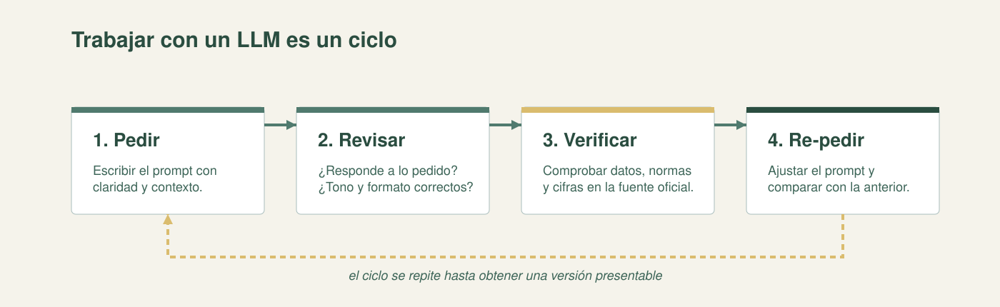

Lección 05 · Bloque 6 — Historia y Desarrollo de la Inteligencia Artificial
Al terminar, podrás explicar qué es un modelo de lenguaje, por qué su respuesta puede variar, cómo pedirle mejor y por qué hay que verificar lo que devuelve.
Apoyado en Microsoft Learn (IA generativa para principiantes), la guía de buenas prácticas de prompting de OpenAI y la lectura del bloque. Ver lectura del bloque →
Un LLM (modelo de lenguaje de gran escala) es una red neuronal a gran escala entrenada sobre enormes volúmenes de texto. Su tarea central es predecir la siguiente palabra. No piensa ni consulta una base de datos: genera texto palabra por palabra, eligiendo entre las continuaciones más probables.
Entender eso explica su utilidad y sus fallas: el modelo elige lo probable, que casi siempre suena bien, pero no es necesariamente lo verdadero.
Regla de oro: un LLM no es una fuente de verdad; es un generador de borradores. Lo que produce se verifica antes de usarse.
Se le muestran miles de millones de frases y se le pide, una y otra vez, predecir la siguiente palabra. Su predicción se compara con la palabra que realmente seguía y se corrigen los pesos para reducir el error: el mismo ciclo de la red neuronal, a escala gigante.
Ojo con una confusión frecuente: durante el preentrenamiento no hay un "refuerzo" cuando acierta. No aprende con premios ni castigos, sino comparando y corrigiendo los pesos (descenso de gradiente). El aprendizaje por refuerzo es otra cosa y se vio en la Sesión 8.
El modelo calcula probabilidades: por ejemplo, tras "El informe de gestión del año 2025…" puede dar señala 42 %, muestra 31 %, indica 18 %. Elige una opción y sigue; por eso la misma pregunta puede dar respuestas parecidas pero no idénticas.
Cuatro conceptos explican el comportamiento real:

Los modelos generativos producen texto y código (y también imagen, audio o video; algunos son multimodales). Pero arrastran tres límites que conviene tener presentes:
| Límite | Qué es | Riesgo en la gestión pública |
|---|---|---|
| Alucinación | Inventa información verosímil pero falsa. | Cifras, normas o referencias incorrectas. |
| Sesgo | Repite prejuicios del entrenamiento. | Trato desigual, lenguaje estereotipado. |
| Fecha de corte | No conoce lo posterior a su entrenamiento. | Normativa o datos desactualizados. |
Un prompt es la instrucción que le damos al modelo. Cuatro técnicas mejoran la respuesta y se pueden combinar:
Después, se itera: pedir → revisar → verificar → re-pedir. La primera respuesta es un borrador; verificar es el paso que no se salta.
Regla de confidencialidad. Antes de pegar cualquier cosa en un chat público: ¿son datos de ciudadanos, documentos reservados o información no pública? Si lo son, no se pega. Se trabaja con ejemplos ficticios, con datos ya públicos o con documentos abiertos. En el Estado, la responsabilidad es del funcionario, no de la herramienta.
Elige una opción. Recibirás la corrección al instante.
1. ¿Qué es un LLM?
2. Durante el preentrenamiento, cuando el modelo se equivoca:
3. ¿Por qué, ante la misma pregunta, la respuesta puede variar?
4. Un modelo que "inventa" una ley o un artículo que no existe está mostrando:
5. ¿Cuál de estas instrucciones aplica mejor la técnica de contexto?
6. ¿Qué NO se debe pegar en un chat público?
Un LLM genera palabra por palabra usando probabilidades. Un buen prompt y la verificación son la diferencia entre un resultado útil y uno engañoso.
Para profundizar: Microsoft Learn, Inteligencia artificial generativa para principiantes, y OpenAI, Buenas prácticas para la ingeniería de prompts. Las técnicas están ampliadas en la hoja de referencia del bloque.